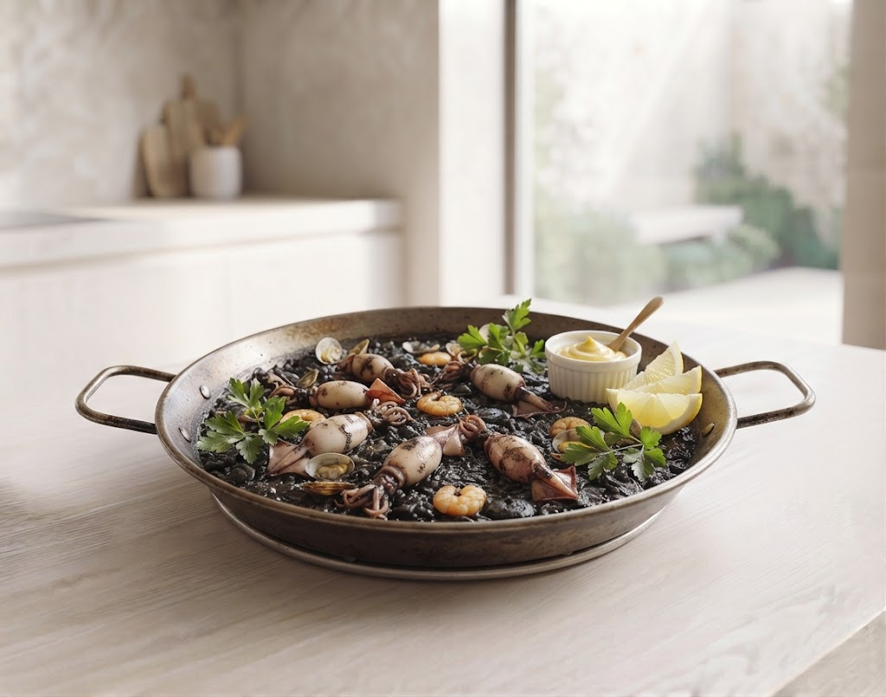

Authentic Spanish Bar Morioka

名物「漆黒のイカ墨パエリア」
三陸の豊かな恵みをスペインの技法で昇華させる。
パエリア、パテ、カルパッチョ、アヒージョ…。
地下に広がる開放的な空間で、
ワインを片手に、日常を忘れる本場のひとときを。
「スペイン料理が初めてで何を選べばいいか分からない」「子ども連れでも楽しめる？」
そんな声にお応えする、新しいサービスを準備中です。
初心者向けのおすすめ食べ比べセットや、辛味を抑えたお子様向けの特製パエリア・タパスの案内ガイドを導入予定。ご家族みんなで安心してお楽しみいただけます。
その日の気分やオーダーした料理に合わせて、ぴったりのスペイン産ワインやノンアルコールカクテルをスマートフォンから簡単に診断・提案してもらえるデジタルサービスを準備中。
当店の代名詞「イカ墨のパエリア」。
濃厚な海の旨味と香りが凝縮されたお米の炊き加減は、まさに職人技。
一口ごとに広がる深いコクは、ワインとの相性も抜群です。
パテからオムレツまで、地元盛岡の旬の食材を贅沢に使用。どのメニューも東京のクオリティに負けない完成度を誇ります。
階段を下りればそこは別世界。広いオープンスペースは、デートや女子会、大規模な団体様まで周りを気にせず楽しめます。
不定期で開催される本格フラメンコライブ。圧倒的な迫力のステップと歌声が、ディナーをより華やかに彩ります。
「イカ墨のパエリア、マッシュルームアヒージョ、どれも本当に美味しい！ワインも豊富でオーナーさんが丁寧に教えてくれました。また是非伺います！」
「雰囲気が最高です！席数もあって広い。友達もワインが進みすぎていました。サービスも非常に良く、盛岡で一番おすすめのスペイン料理店です。」